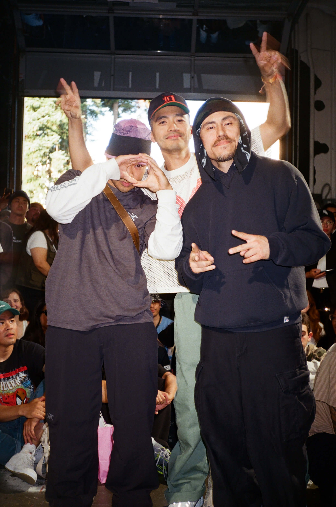
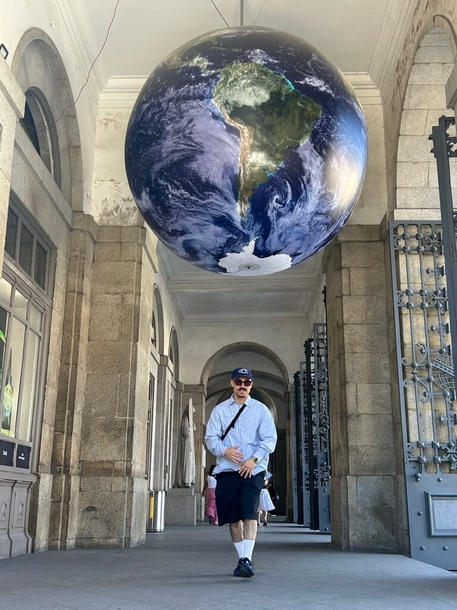

Complex Breaks
simple is complex — breaking culture, in my own voice
Why This Exists
Complex Breaks is my story and my perspective of breaking — told on my own terms. Not packaged for social media, not filtered through a company brand, not sorted by an algorithm.
Breaking already lives on platforms built to rank it and sell against it. I wanted one place to say what I actually think about the culture, in my own voice, on ground I own.
The Culture It Serves
Breaking happens at jams — long, loud nights where crews battle, cyphers open and close, and the people in the room are the whole point. Complex Breaks documents them the way they actually feel: shot from inside the circle, never staged.
New Birth, Porto, the Elephant Graveyard, Sunshine Jam — events across cities and years, held together by one lens and the same care.




The Identity
Three pillars, one line — shop, session, culture. The commerce that funds the work, the sessions that are the work, and the culture that holds it all together.
The visual language is deliberately quiet: documentary photography, lowercase type, an animated mark, and no marketing gloss. A scene this loud doesn't need a loud website — the restraint is the point, and it's the same instinct I bring to everything I design.
Merch is part of the identity, not a side hustle. Small, considered drops — the Fisherman Beanie, the Hollow Earth tee, Bboys in Hoodz, the Style oversized tee — each one a piece of graphic design that puts the culture on a body and funds the artform.
What I Built
I designed and run Complex Breaks end to end — the brand and logo, the photography and its curation, the merch, the writing, and the system that ties a shop, a Substack, an event archive, and a donation flow into one coherent place.
It's built on Squarespace — on purpose. The calm-tech principle I design by applies to my own tools: use the simplest thing that ships, and spend the energy on the brand and the writing, not on infrastructure nobody sees. Technology that knows when to stop starts with not over-building your own stack.
The values are wired in. The site points people toward the Light Phone and Proton, the writing lives on Substack instead of an algorithm, and the whole thing stays calm. It practices what it preaches.
Where It Lives Now
Complex Breaks is ongoing — a real platform I've run on my own, not a concept.
It lives across a shop, a Substack, Bluesky, Instagram, and YouTube — and it's still going. See it live at complexbreaks.com, read the writing on Substack, or browse the shop.
What It Taught Me
Running this end to end — brand, commerce, writing, community — taught me what a school brief can't: that shipping and maintaining a real thing is its own design skill. The hardest part wasn't making it look good. It was keeping it simple enough to keep going alone.